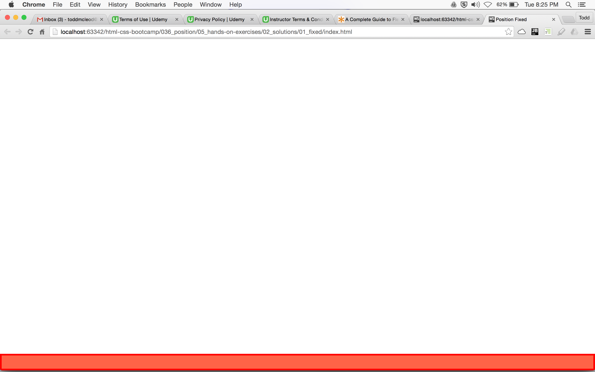
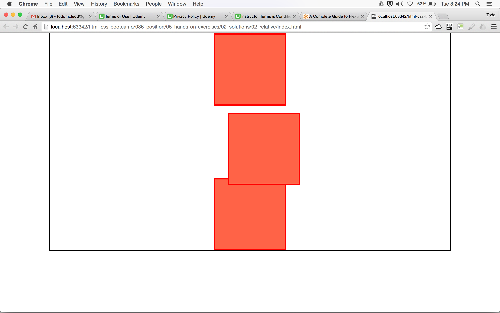
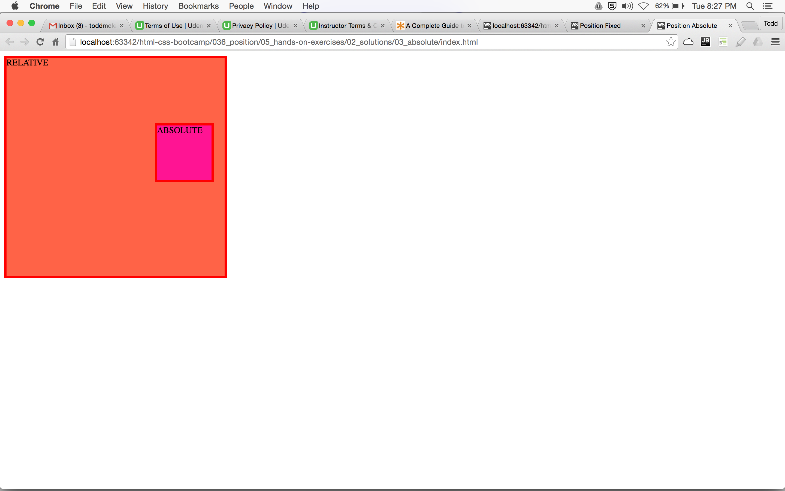
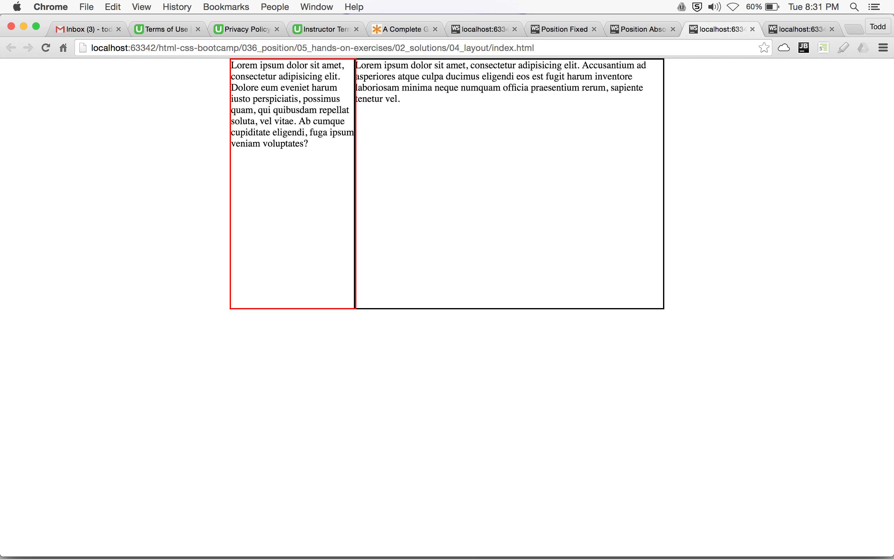

Create this page which has a footer area on the page that always remains fixed to the bottom of the page. Use the declaration "position: fixed" in your CSS.
Create this page which uses the declaration "position: relative" in its CSS.
Create this page which uses the declaration "position: absolute" in its CSS.
Create this page. The layout of this page should be created using the "position" property for the left content set to the value of "absolute".
